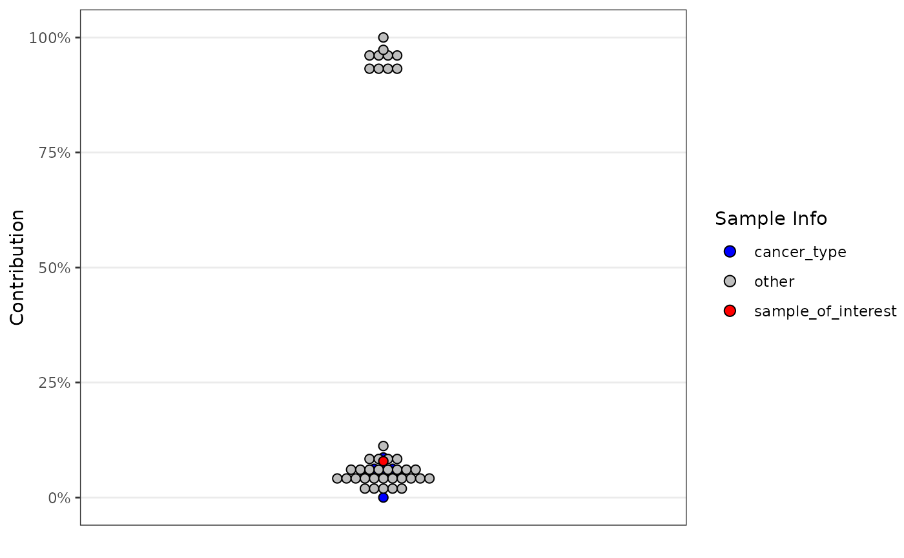
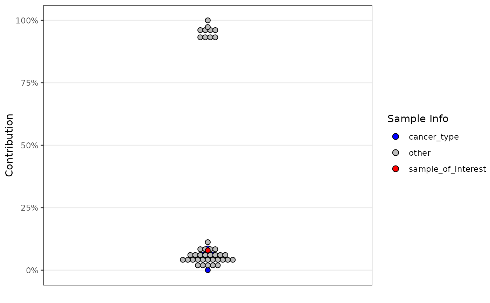

Visualise Signature Contributions with a Dot Plot
Source:R/sig_visualise_dotplot.R
sig_visualise_dotplot.RdThis function creates a dot plot to visualise signature contributions in genomic data.
Usage
sig_visualise_dotplot(
data,
col_sample = "sample",
col_contribution = "contribution",
binwidth = 0.02,
col_fill = NULL,
col_colour = NULL,
binpositions = c("bygroup", "all"),
palette_fill = NULL,
palette_colour = NULL,
sort_by = c("default", "frequency_fill", "frequency_colour", "palette_fill",
"palette_colour"),
xlab = NULL,
ylab = stringy::prettytext(col_contribution),
show_legend = TRUE,
legend_title_fill = stringy::prettytext(col_fill),
legend_title_colour = stringy::prettytext(col_colour),
...
)Arguments
- data
A data frame describing the contributions of one signature across an entire cohort (or set of bootstrapping experiments).
- col_sample
The name of the column in
datathat contains the sample identifiers. Default is"sample".- col_contribution
The name of the column in
datathat contains the contributions (exposures) to plot (unit: proportions of total mutations explained by the signature). Default is"contribution".- binwidth
The width of the bins used in the dot plot. Default is
0.02.- col_fill
Optional. The name of the column in
datathat defines the fill colour grouping.- col_colour
Optional. The name of the column in
datathat defines the colour grouping.- binpositions
Positioning method for the bins. Either
"bygroup"or"all". Default is"bygroup".- palette_fill
Optional. A vector of colours for the fill aesthetic.
- palette_colour
Optional. A vector of colours for the colour aesthetic.
- sort_by
When
col_fillorcol_colourare supplied, in which order should the different groups be drawn. Choices are:- "default"
Uses the existing levels of
col_fill/col_colour.- "frequency_fill"
Renders groups based on how many samples share each fill colour (smallest group on top).
- "frequency_colour"
Renders groups based on how many samples share each colour (smallest group on top).
- "palette_fill"
Renders groups based on the order their fill colour was supplied to
palette_fill.- "palette_colour"
Renders groups based on the order their colour was supplied to
palette_colour.
- xlab
Label for the x-axis.
- ylab
Label for the y-axis. Default is
stringy::prettytext(col_contribution).- show_legend
Logical. If
TRUE, shows the legend. Default isTRUE.- legend_title_fill
Title for the fill legend. Default is
stringy::prettytext(col_fill).- legend_title_colour
Title for the colour legend. Default is
stringy::prettytext(col_colour).- ...
Arguments passed on to
ggplot2::geom_dotplotmappingSet of aesthetic mappings created by
aes(). If specified andinherit.aes = TRUE(the default), it is combined with the default mapping at the top level of the plot. You must supplymappingif there is no plot mapping.positionA position adjustment to use on the data for this layer. This can be used in various ways, including to prevent overplotting and improving the display. The
positionargument accepts the following:The result of calling a position function, such as
position_jitter(). This method allows for passing extra arguments to the position.A string naming the position adjustment. To give the position as a string, strip the function name of the
position_prefix. For example, to useposition_jitter(), give the position as"jitter".For more information and other ways to specify the position, see the layer position documentation.
binaxisThe axis to bin along, "x" (default) or "y"
method"dotdensity" (default) for dot-density binning, or "histodot" for fixed bin widths (like stat_bin)
stackdirwhich direction to stack the dots. "up" (default), "down", "center", "centerwhole" (centered, but with dots aligned)
stackratiohow close to stack the dots. Default is 1, where dots just touch. Use smaller values for closer, overlapping dots.
dotsizeThe diameter of the dots relative to
binwidth, default 1.stackgroupsshould dots be stacked across groups? This has the effect that
position = "stack"should have, but can't (because this geom has some odd properties).originWhen
methodis "histodot", origin of first binrightWhen
methodis "histodot", should intervals be closed on the right (a, b], or not [a, b)widthWhen
binaxisis "y", the spacing of the dot stacks for dodging.dropIf TRUE, remove all bins with zero counts
na.rmIf
FALSE, the default, missing values are removed with a warning. IfTRUE, missing values are silently removed.show.legendlogical. Should this layer be included in the legends?
NA, the default, includes if any aesthetics are mapped.FALSEnever includes, andTRUEalways includes. It can also be a named logical vector to finely select the aesthetics to display.inherit.aesIf
FALSE, overrides the default aesthetics, rather than combining with them. This is most useful for helper functions that define both data and aesthetics and shouldn't inherit behaviour from the default plot specification, e.g.borders().
Examples
data <- example_dotplot_data()
sig_visualise_dotplot(data)
 # Example with fill colours
sig_visualise_dotplot(
data,
col_fill = "sample_info",
palette_fill = c("sample_of_interest" = "red", "cancer_type" = "blue", "other" = "grey")
)
#> ! Creating separate, overlapping stacks for points with different fill/colour.
#> To ensure your groups of interest are not hidden behind a larger group,
#> please specify `sort_by = 'frequency_fill' or 'palette_fill'`

# Example with fill colours
sig_visualise_dotplot(
data,
col_fill = "sample_info",
palette_fill = c("sample_of_interest" = "red", "cancer_type" = "blue", "other" = "grey")
)
#> ! Creating separate, overlapping stacks for points with different fill/colour.
#> To ensure your groups of interest are not hidden behind a larger group,
#> please specify `sort_by = 'frequency_fill' or 'palette_fill'`
